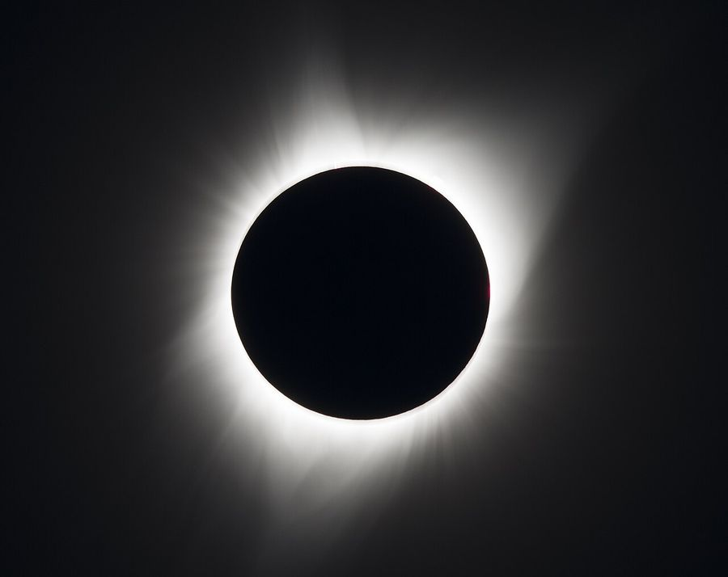
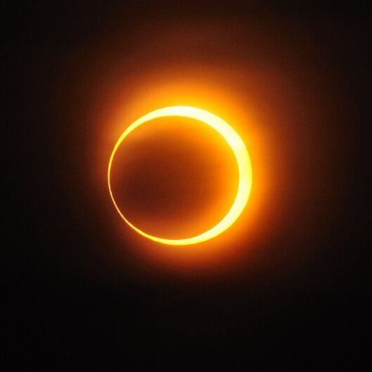
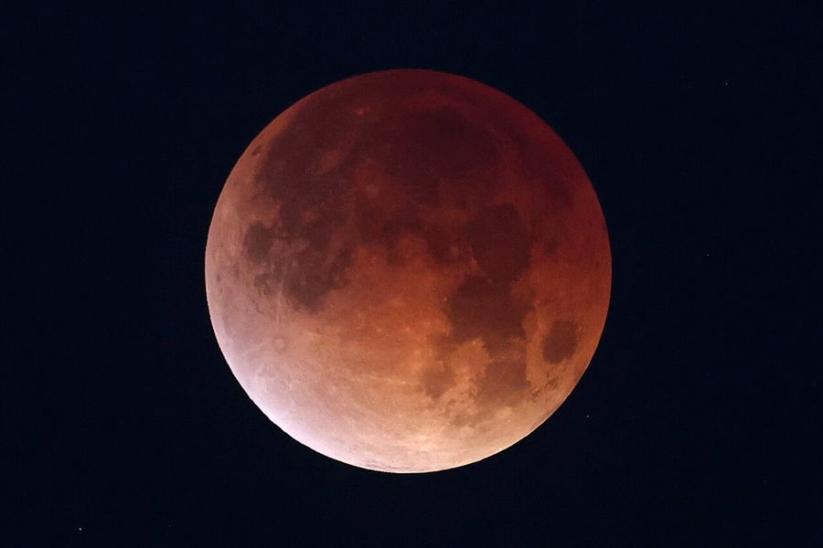

하늘에서 보이는 움직임은 우리가 움직이는 지구 위에서 본 모습입니다. 이 절에서는 달이 매달 태양 앞을 지나는데도 일식이 드문 까닭과, 행성이 가끔 거꾸로 가는 것처럼 보이는 까닭을 태양·지구·달·행성의 실제 배치로 풀어 봅니다.
먼저 알면 좋은 것달의 위상 (삭과 망)지구의 공전황도
3.1.1
일식과 월식은 왜 매달 일어나지 않을까?
달 궤도의 기울기 · 식의 철
이 해의 일식
—
이 해의 월식
—
그날 달의 황위
—
날짜는 첫 삭을 1월 5일로 둔 모식 달력이라 실제 연도의 식 날짜와 다릅니다. 식이 일어나는 황위 한계(일식 약 1.5°, 월식 약 1.0°)는 대략값이고, 교점은 실제로 18.6년에 한 바퀴 서쪽으로 돕니다.
질문달은 한 달에 한 번 태양과 같은 방향(삭)에 오고, 한 번 태양의 반대편(망)에 옵니다. 그렇다면 일식과 월식도 매달 일어나야 하지 않을까요?
복원일식은 달이 태양을 가릴 때, 월식은 달이 지구의 그림자 속으로 들어갈 때 일어납니다. 둘 다 태양, 지구, 달이 거의 한 줄에 서야 합니다. 옆에서 볼 때도 한 줄이어야 합니다.
설명달의 공전 궤도는 지구의 공전 궤도면(황도면)에 대해 약 5.1° 기울어 있습니다. 그래서 삭이나 망이 되어도 달은 대개 황도면보다 위나 아래로 비껴 지나가고, 그림자가 서로 닿지 않습니다.
연결달 궤도가 황도면을 뚫고 지나가는 두 점을 교점이라고 합니다. 태양이 교점 방향 가까이 있을 때 삭이나 망이 오면 식이 일어납니다. 태양은 1년에 교점 두 개를 한 번씩 지나므로, 식은 반년 간격의 식의 철에 몰립니다.
적용‘달 궤도가 5.1° 기울어짐’을 꺼 보세요. 식이 몇 번 일어나나요? 다시 켜고 교점 방향을 바꿔 보세요. 식의 철은 어떻게 옮겨 가나요?
판단“월식은 지구의 그림자가 달을 가리는 것이니, 망 때의 달 모양도 지구 그림자 때문이다”는 생각은 오개념입니다. 달의 위상은 태양 빛을 받는 면을 보는 각도로 생기고, 지구 그림자는 식이 일어나는 드문 망에만 달에 닿습니다.
확인조건이 달라지면
어느 해 3월에 일식이 일어났습니다. 같은 해에 식이 또 일어날 가능성이 가장 큰 때는?
3.1.2
일식과 월식에는 어떤 종류가 있을까?
읽기 · 본영과 반영, 일식·월식의 종류
같은 일식인데 어떤 곳에서는 대낮이 밤처럼 어두워지고, 어떤 곳에서는 태양이 반지처럼 보이며, 어떤 곳에서는 태양이 조금 이지러질 뿐입니다. 무엇이 이런 차이를 만들까요?
1그림자에는 두 부분이 있다
태양은 점이 아니라 크기가 있는 광원이라서, 달이나 지구의 그림자는 두 부분으로 나뉩니다. 빛이 완전히 가려진 원뿔 모양의 본영과, 태양의 일부만 가려진 그 바깥의 반영입니다.
태양과 달의 거리는 크게 줄였고, 달 그림자의 원뿔도 과장했습니다. 실제로 본영의 끝은 지구 표면 근처에 있어서, 달까지의 거리가 조금만 달라져도 본영이 지표에 닿기도 하고 못 닿기도 합니다.
2일식의 종류
달의 궤도는 타원이라 지구에서 본 달의 크기(시지름)는 약 29′에서 34′까지 달라지고, 태양은 약 31.5′에서 32.5′ 사이입니다. 두 천체의 겉보기 크기가 거의 같기 때문에 일식의 종류가 갈립니다.
개기 일식: 달이 가까워 태양보다 크게 보일 때, 본영 안에서 봅니다. 태양 면이 다 가려지고 평소에는 보이지 않던 코로나가 드러납니다. 한 곳에서 개기가 이어지는 시간은 길어야 7분 30초 남짓입니다.
금환 일식: 달이 멀어 태양보다 작게 보일 때, 본영의 연장선 위에서 봅니다. 태양의 가장자리가 금가락지처럼 남습니다.
부분 일식: 반영 안에서 봅니다. 태양의 일부만 가려지며, 개기·금환 일식이 일어나는 띠 양쪽의 넓은 지역에서 보입니다.
혼성 일식: 지구는 둥글어서 본영의 경로 가운데 부분이 달에 더 가깝습니다. 그래서 한 번의 일식이 경로의 일부에서는 개기로, 양 끝에서는 금환으로 보이기도 합니다.
달 그림자는 지표 위에서 서쪽에서 동쪽으로 움직입니다. 달이 공전 궤도를 따라 동쪽으로 움직이는 속력(약 1 km/s)이 지구 자전으로 지표가 동쪽으로 움직이는 속력(적도에서 약 0.46 km/s)보다 빠르기 때문입니다. 본영이 지나간 폭 최대 약 270 km의 좁은 띠에서만 개기 일식을 볼 수 있습니다.



차례대로 개기 일식(2017년 8월, 미국 오리건주), 금환 일식(2010년 1월, 중국 지난), 개기 월식(2026년 3월, 미국 뉴올리언스).
사진: NASA/Aubrey Gemignani · CC BY 2.0 · Wikimedia Commons / A013231 · CC BY-SA 3.0 · Wikimedia Commons(가운데를 잘라 씀) / NASA/Michael DeMocker · 퍼블릭 도메인 · Wikimedia Commons
3월식의 종류
달이 지구 그림자의 어느 부분을 지나가느냐에 따라 월식의 종류가 정해집니다.
개기 월식: 달 전체가 본영에 들어갑니다. 달이 완전히 사라지지 않고 붉게 보이는데, 지구 대기를 지나며 굴절된 햇빛 가운데 푸른빛은 산란되어 빠지고 붉은빛이 달에 닿기 때문입니다.
부분 월식: 달의 일부만 본영에 들어가 한쪽이 어둡게 이지러집니다.
반영식: 달이 반영만 지나갑니다. 달이 아주 조금 어두워질 뿐이라 맨눈으로는 알아차리기 어렵습니다.
판단개기 일식은 좁은 띠에서만 볼 수 있지만, 월식은 그 시각에 달이 떠 있는 곳, 곧 밤인 지구의 절반 어디에서나 봅니다. 그래서 한 지역에서 월식을 보는 기회가 개기 일식보다 훨씬 많습니다. “월식이 일식보다 더 자주 일어난다”고 생각하기 쉽지만, 반영식을 빼고 지구 전체로 세면 일식이 더 자주 일어납니다.
확인조건이 달라지면
달이 교점 근처에서 삭이 되었는데, 마침 달이 지구에서 가장 먼 곳(원지점) 부근에 있습니다. 달 그림자의 중심선 위에 있는 사람이 보게 될 일식은?
3.1.3
행성은 왜 가끔 뒤로 가는 것처럼 보일까?
역행 · 최대 이각 · 궤도 시뮬레이션
지금 움직이는 방향
—
태양과의 각 (이각)
—
역행하는 기간
—
궤도 반지름과 공전 주기는 실제 값(금성 0.723 AU·0.615년, 화성 1.524 AU·1.881년, 목성 5.203 AU·11.86년)이고, 궤도를 같은 평면의 원으로 근사했습니다.
질문화성은 밤마다 별들 사이를 조금씩 동쪽으로 옮겨 가다가, 몇 달에 한 번씩 서쪽으로 되돌아가는 것처럼 보입니다. 화성이 실제로 거꾸로 도는 걸까요?
복원모든 행성은 태양 둘레를 같은 방향으로 돕니다. 태양에서 가까운 행성일수록 더 빨리 돕니다. 우리는 그 가운데 하나인 지구 위에서 다른 행성을 봅니다.
설명빠른 지구가 느린 화성을 안쪽에서 앞지를 때, 지구에서 화성을 보는 시선이 잠깐 거꾸로 돌아갑니다. 고속도로에서 느린 차를 추월할 때 그 차가 뒤로 가는 것처럼 보이는 것과 같습니다. 이것이 역행이고, 화성이 태양의 반대편에 오는 충 무렵에 일어납니다.
연결지구보다 안쪽을 도는 금성은 지구에서 볼 때 태양에서 일정한 각도 이상 멀어지지 못합니다. 이 최대 각을 최대 이각이라고 하며, 금성의 궤도 반지름 0.723 AU로 계산하면 sin⁻¹(0.723) ≈ 46°입니다.
적용화성, 목성, 금성을 차례로 골라 재생해 보세요. 역행 기간은 어느 행성이 가장 긴가요? 금성의 이각은 어느 범위 안에서만 움직이나요?
판단옛 천문학자들은 지구가 멈춰 있다고 보고, 역행을 설명하려고 행성이 작은 원(주전원)을 그린다고 생각했습니다. 관측과 맞았지만 설명은 복잡했습니다. 태양 중심 모형은 역행을 ‘지구도 움직인다’는 한 가지 가정으로 설명합니다. 관측에 맞는 모형이 여럿일 때, 더 적은 가정으로 설명하는 쪽을 고르는 것도 과학의 판단입니다.
.jpg){kind=link}

.jpg){kind=link}